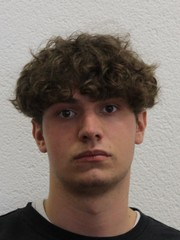

Bonjour, je m'appelle David Dieperink et j'ai 16 ans. J'habite à Gimel, c'est une petite commune juste au dessus de Aubonne.
J'ai deux frères, un grand et un petit. Mon grand frère fait également un apprentissage dans le domaine de l'informatique, il est en 3ème année a l'école des Arches.
Je suis un passionné d'informatique, j'aime savoir comment tout ce système fonctionne, c'est pour cela que j'ai choisi cette formation.
J'ai fais toutes mes années d'école obligatoire et une année de préapprentissage à l'école Vinet à Lausanne.
J'ai fais cette année en plus car je n'avais pas trouvé de place d'apprentissage.
De plus j'ai obtenu mon certificat de fin de scolarité il y'a deux ans. En plus de l'année de préapprentissage j'ai également fait ma 11ème année à l'école Vinet.
Je suis passionné également de Ski et de Skate. Je fais du ski à chaque saison d'hiver et le skate c'est pendant l'été. Je débute le skate, j'ai commencé cet été.
Je fais principalement du skate avec mes amis. Pour parler du ski je suis assez experimenté, j'ai obtenu une médaille d'or en slalom il y'a environ 7 ans.
Je ski principalement avec mon grand frère et des amis à moi quand je peux.
Photo de profil :

Je suis un passionné de jeux vidéos, Rinbow Six Siege est un de mes jeux favoris. J'y joue depuis la sortie du jeux. Il est sorti le 7 avril 2015.
Au tout début, j'étais un jeueur console. Je jouais sur Xbox et environ 2 ans après j'ai acheté mon premier PC.
Sur console, j'avais une petite équipe avec la quelle nous faisions des compétitions en ligne. Les compétitions étaient pendant les week-ends.
Une fois que je suis parti sur PC, j'ai continuer à jouer pendant un certain temps avant de rejoindre une structure esport Suisse.
La strucute s'appelle la Monthey Chablais Esport, j'étais joueur semi-pro dans cette structure.
Etant donné mon âge je ne pouvais pas faire toutes les compétitions. Néanmoins je participais tout de même aux entraînements.
J'avais plusieurs entraîneurs, un ancien champion du monde sur Xbox et un ancien champion du monde sur différents jeux.